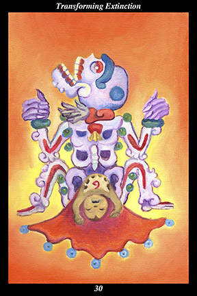

 | IMAGE The skeletal form of death is shown in the childbirth position, giving birth to new life. Both the blood accompanying the birth and the bones of the skeleton have jade beads affixed to them. Over the heart of the newborn is the spiral cross section of a conch shell. |
INTERPRETATION
This hexagram represents the immortality that is born from mortality. The skeletal form of death symbolizes those remains of an individual that are common to all people. The newborn symbolizes the spirit warrior, who is delivered from the body’s death to return to the spirit realm from whence it comes. The jade beads affixed to the blood symbolize the precious nature of that which sustains life. The jade beads affixed to the bones of the skeleton symbolize the precious nature of all those who have come before us. The spiral of the conch over the heart symbolizes the wisdom and power of divine intelligence that fills the soul of the newborn spirit warrior. Taken together, these symbols mean that your body is the womb within which the embryo of the spirit warrior is carried.
ACTION
The spirit warrior contemplates the inevitable extinction of the body’s spark in order to illuminate the perfection of the present moment. It is a time for studying the end of things, for opening the heart fully to the reality of death: the need here is to reach beyond the intellect’s dead rationality in order to grasp the emotional reality of the body’s mortality. Instead of waiting for death to approach you, take the lead and approach it in order to experience that part of yourself that does not die. Because you have the courage to authentically accept the end of bodily experience, your heart fills with joyous appreciation for each moment that blossoms anew with the timeless perfection of creation. Because you have the loving-kindness to authentically accept that death inspires fear and doubt in other people, you find ways to express your emotions that encourage others to gaze unflinchingly into the bittersweet awareness of mortal perfection. Those who continue to avert their eyes from death’s face, however, see imperfection everywhere and find it uncomfortable to genuinely contemplate or discuss their mortality. Those who treat death as the midwife who delivers them into the ancestral homeland of the spirit warriors, on the other hand, increasingly come to view creation through the eyes of the immortal that is being born every moment. Because you prepare for the end of things, you are ready for the beginning that lies beyond.
INTENT
Knowing that death transforms us after the body’s light is extinguished requires little more than intellectual knowledge. Knowing that we transform death before the body’s light is extinguished, however, requires first-hand experience of the deathless. For the spirit warrior, death is not the absence of life. It is the felt presence of the gateway between the visible and invisible realms—it is the loving presence of the guide home. We transform the extinction of the body by becoming the spirit warrior who carries its spark back to the universal fire of creation. We transform the way we view the world by appreciating the preciousness of every moment we are honored to spend in the visible realm.
SUMMARY
Your spirit is growing stronger, take care what you create. Keep in mind the end of things and you will begin only what you wish to be remembered for—keep in mind the unpredictability of fate and you will not waste time or energy on petty goals. Transform death into your ally and you will make every moment count. Transform death into the spirit of renewal and you will find peace of mind.
THE LINE CHANGES
1° When those around you are swayed by fads and fashions, correct your own inclination to follow along. When others around you are swayed by the unrelenting torrent of events, do not go along with their emotions. Make a center where external events do not change your state of mind.
2° You can stabilize yourself but not another—each person must come to it in their own time. Even when you are dragged forward by impetuous allies, do not allow their disturbed emotions to become your own. Offer advice—but if it is ignored, remain unmoved by the backlash.
3° Those below don’t follow you because you don’t trust their advice—those above don’t give you full rein because they don’t trust your judgment. You are in a no-win situation and growing more frustrated with every episode. You should cultivate patience and self-evaluation or else step down.
4° Those above trust you because you avoid complicating simple things—those below respect you because you do not make snap judgments. This is a position of responsibility but you are capable of much more. Continue to excel here and you will be rewarded with advancement.
5° It is difficult to see at first that your words are really actions, as concrete as an attack or a retreat. Once you see the force of words in this realm, however, you adapt quickly and correctly. Proper speech not only demonstrates your own inner stability, but helps others feel less uncertain.
6° The window of opportunity opens—you are able to achieve the ecstatic life. Neither the uncertainties of life or death throw you off balance—you are becoming a mountain of immovable wisdom. Hold still—all of creation is passing your way.